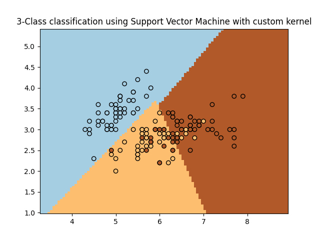

Note
Click here to download the full example code or to run this example in your browser via Binder
SVM with custom kernel¶
Simple usage of Support Vector Machines to classify a sample. It will plot the decision surface and the support vectors.
Out:
/root/scikit-learn/examples/svm/plot_custom_kernel.py:50: MatplotlibDeprecationWarning: shading='flat' when X and Y have the same dimensions as C is deprecated since 3.3. Either specify the corners of the quadrilaterals with X and Y, or pass shading='auto', 'nearest' or 'gouraud', or set rcParams['pcolor.shading']. This will become an error two minor releases later.
plt.pcolormesh(xx, yy, Z, cmap=plt.cm.Paired)
print(__doc__)
import numpy as np
import matplotlib.pyplot as plt
from sklearn import svm, datasets
# import some data to play with
iris = datasets.load_iris()
X = iris.data[:, :2] # we only take the first two features. We could
# avoid this ugly slicing by using a two-dim dataset
Y = iris.target
def my_kernel(X, Y):
"""
We create a custom kernel:
(2 0)
k(X, Y) = X ( ) Y.T
(0 1)
"""
M = np.array([[2, 0], [0, 1.0]])
return np.dot(np.dot(X, M), Y.T)
h = .02 # step size in the mesh
# we create an instance of SVM and fit out data.
clf = svm.SVC(kernel=my_kernel)
clf.fit(X, Y)
# Plot the decision boundary. For that, we will assign a color to each
# point in the mesh [x_min, x_max]x[y_min, y_max].
x_min, x_max = X[:, 0].min() - 1, X[:, 0].max() + 1
y_min, y_max = X[:, 1].min() - 1, X[:, 1].max() + 1
xx, yy = np.meshgrid(np.arange(x_min, x_max, h), np.arange(y_min, y_max, h))
Z = clf.predict(np.c_[xx.ravel(), yy.ravel()])
# Put the result into a color plot
Z = Z.reshape(xx.shape)
plt.pcolormesh(xx, yy, Z, cmap=plt.cm.Paired)
# Plot also the training points
plt.scatter(X[:, 0], X[:, 1], c=Y, cmap=plt.cm.Paired, edgecolors='k')
plt.title('3-Class classification using Support Vector Machine with custom'
' kernel')
plt.axis('tight')
plt.show()
Total running time of the script: ( 0 minutes 0.151 seconds)